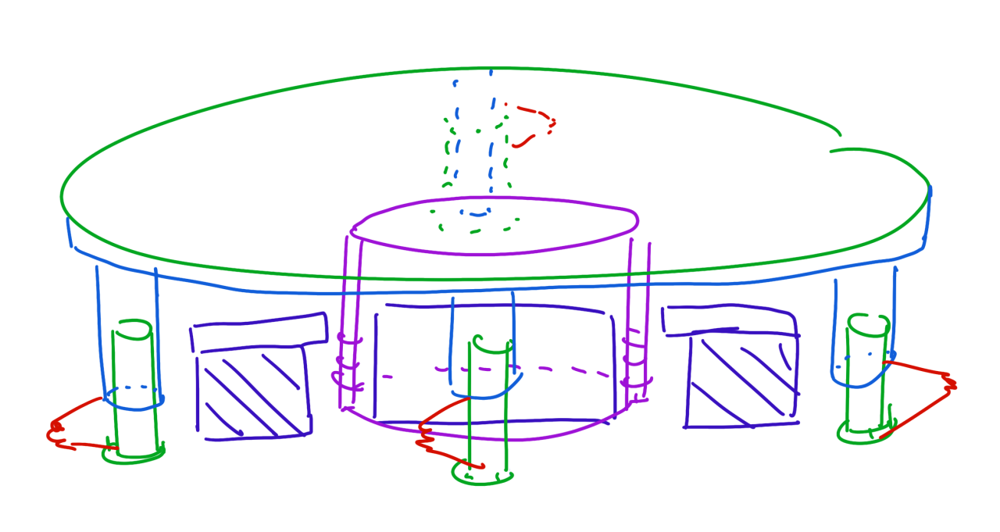

Custom apparatus for hydrodynamic quantum analogs research at National Demonstration Center For Experimental Physics Education, Nanjing University
This vibration system is carefully calibrated to achieve stable vertical excitation for hydrodynamic quantum analog studies:
The system maintains stable Faraday wave patterns for extended periods, enabling detailed trajectory studies.
While the system produces stable walking droplet phenomena and Faraday waves, we've observed some nonlinear effects in our operating frequency range (~80Hz), including unexpected frequency peaks and beat phenomena. Despite testing multiple subwoofers, these artifacts persist, likely due to mechanical nonlinearities in the speaker components.
I'm currently designing a more stable, cost-effective vibration platform inspired by speaker mechanisms, which will be shared in my Designs section once developed.
Custom imaging solutions for different experimental needs:
Future developments may include exploring schlieren imaging techniques for wave field reconstruction to further enhance our visualization capabilities.
Custom solutions for consistent droplet production:
Combined with ImageJ and Python analysis pipelines for quantitative measurements.
I've designed a more affordable modular droplet generator (see Designs), while continuing to explore the fascinating possibilities of direct droplet generation on oil-repellent surfaces.
Maintain darkroom conditions during imaging sessions. Cover silicone oil when not in use to prevent dust contamination.
Conduct extended measurements during low-noise periods. Capture reference frames before each experiment.
Use black anodized surfaces to minimize reflections. Clean with isopropyl alcohol before each run.